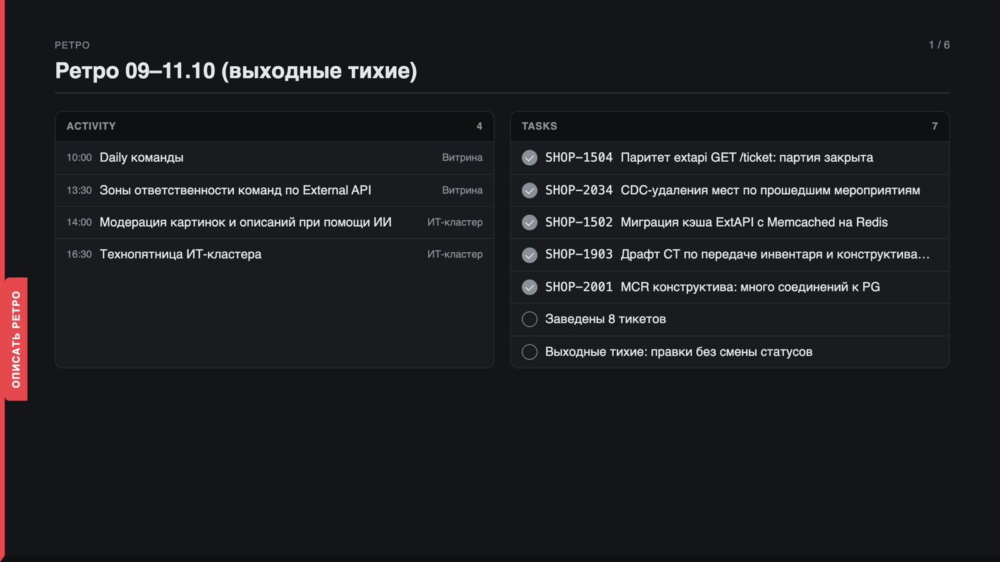

Утренняя планёрка
с ИИ-агентом
Агент держит фокус и знает всё, что нужно для решений. PO утром не собирает данные — он решает.
Одна команда —
и вся картина утра.
Утро PO начинается с обхода вкладок
и всё равно мимо
Каждый источник — своя вкладка и свой формат. Обход делается, когда успел. Сигнал об отклонении PO получает не утром, а на эскалации.
готовый бриф
Агент сам обходит источники, сверяет с целями и приносит короткий отчёт: что изменилось, что сегодня, где нужно решение.
Утром PO теряет две вещи: фокус и контекст
Шум съедает фокус
За сутки — сотни сообщений и правок в трекере. День меняют единицы, но чтобы их найти, нужно прочитать всё.
Контекст не помещается в голову
Цели квартала, спринт, договорённости, риски, встречи дня. Держать всё одновременно человеку тяжело, к обеду — уже невозможно.
Решения — по неполной картине
Без связи «событие → цель» сложно понять, что важно. Приоритеты ставятся по тому, кто громче, а не по тому, что влияет на результат.
Бриф — не пересказ каналов. Это то, что меняет план на сегодня.
Агент — дежурный по утру
Источники
Трекер, календарь, отчёт спринта, планнер PO, итоги встреч. Агент только читает.
Агент
Собирает снимок, сверяет с целями спринта и квартала, сворачивает шум в число, у каждого факта — источник.
PO
Читает короткий бриф и отвечает на «Нужны решения». Планнер меняется только после его «да».
Разделение ролей: агент держит контекст, PO держит фокус.
В бриф проходят три класса сигналов
| Класс | Почему в брифе | Куда ведёт |
|---|---|---|
| Ждут тебя | Кто-то заблокирован решением, ответом или согласованием PO | Прямо в план на сегодня |
| Сдвиг или блокер | Что-то из спринта поехало, прогноз к цели изменился | Пересмотр приоритетов |
| Факт к цели | Решение принято, зависимость снялась, KR продвинулся | Обновление картины |
| Всё остальное | Шум — существует только числом | «Прочее: 45 тикетов тронуто» |
Бриф, который вырос до двух экранов, свою задачу не выполнил.
Шесть разделов — шесть вопросов утра
Ретро
Что сделано вчера: закрытые задачи и встречи. План прошлого утра против факта.
Сегодня
Мои задачи «кому · что», просроченные первыми. Ключевые встречи с целью «что получить».
Договорённости
Что обещали мне: у кого, что проверить, как посмотреть результат (how-to-demo).
Риски по OKR
Каждый риск привязан к цели, с последствиями и владельцем. Без владельца — так и написано.
Команды
Истории спринта: что сделано с прошлого отчёта, что осталось, следующий шаг.
Нужны решения
До пяти вопросов, на которые может ответить только PO. Ради них всё и собиралось.
Настраиваешь под себя один раз
- Доступы
Агенту — трекер, календарь, планнер и отчёт спринта. Только чтение. - Зона
Команда, доска, текущий спринт, цели квартала — с чем сверять события. - Форма
Какие разделы, сколько строк, что считать шумом. Это навык /morning, его можно править. - Расписание
Каждое утро до начала дня — или вручную, когда нужно.
Один агент — одна зона. У меня три PO-агента на три продукта, у каждого свой утренний отчёт по своей доске и своим целям.
# профиль PO-агента
доступы: трекер, календарь, планнер
зона: доска команды · спринт · OKR
навык: /morning
запуск: каждое утро, до дейлика
доставка: чат PO + слайды
Схема настройки, не формат файла: у каждого харнесса свой способ описать профиль.
Дальше — одна команда каждое утро
- Снимок данных
Один детерминированный вызов вместо ~20 шагов модели. Повторный запуск в течение часа — за секунды. - Разбор
Три класса сигналов, сверка с целями, шум — в число. - Отчёт
Markdown по шаблону + данные для слайдов. Нет данных — так и пишет: [НЕТ ДАННЫХ]. - Слайды
Рендер без правок руками: на ноутбуке — слайды, на телефоне — лента. - Стоп
В планнер — только после «да» PO, по одному пункту.
Сегодня 10 встреч, 3 ключевые. Нужны решения — 4.
Фрагмент реального утра, имена изменены.
Так выглядит отчёт

Реальный отчёт одной из моих команд. Люди, партнёры и номера задач изменены.
Отчёт живой: кликайте, листайте, правьте
- Клик по строке — заметка: что сделано, чеклист, источники.
- Вкладки слева — «Описать ретро», «План на сегодня», «Календарь», «Актуализация рисков».
- Заметки редактируются прямо в отчёте — это черновик PO на день.
- «Комментарии для LLM» — правки PO собираются в промт, агент пересобирает отчёт с их учётом.
Агент не додумывает
- Каждый факт — с источником. Задача, поле, время, событие календаря. Нет источника — нет строки.
- Пробел виден. Неподключённый источник помечен [НЕТ ДАННЫХ]: молчание и отсутствие данных — разные вещи.
- Только чтение. Агент не пишет в чаты, не меняет статусы, не помечает прочитанным.
- Запись — после «да». Закрыть, перенести, завести задачу — сначала показ изменения, потом подтверждение PO.
- Не сглаживает. Просрочка на 20 дней так и называется.
Агент собирает — PO решает
| Было | Стало | |
|---|---|---|
| Картина дня | 40+ минут обхода источников | Одна команда, несколько минут чтения |
| Регулярность | Когда успел | Каждое утро, по расписанию |
| Отклонения | Узнаю на эскалации | Утром, с источником и связью с целью |
| Шум | Читаю всё подряд | Свёрнут в одно число |
| За PO остаётся | Сбор данных | Приоритет при конфликте целей, решение по просрочке, реалистичность плана |
Контекст — у агента,
фокус — у PO
Настроить один раз, запускать одной командой и получать утреннюю сводку в том виде, в каком нужно именно вам.
github.com/po-helper-org/poh-morning-status ↗